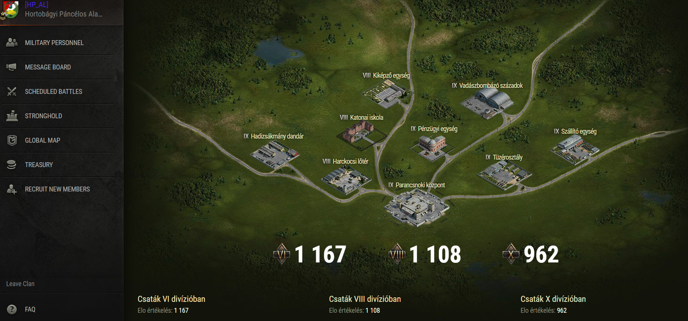

Klánunk 2018.03.13-án nyitotta ki kapuit, szóval nem ma kezdtük...Épületeinket szépen lassan felvittük 9-8-as szintre, ami ugye rengeteg doboz.
 Természetesen doboz követelmény nincsen, de az aktivitást azt nézzük és teljesítmény alapján osztunk rangot.
Figyelembe vesszük azokat a tényezőket, hogy ez egy játék a család/munka/iskola az első, ezért is szoktunk este 8-kor kezdeni az osztagot, mert ilyen tájba már mindenknek van egy-két szabad órája. :)
Woton belül kommunikálunk nyomogatjuk a "Q"-gombot mivel pár főtisztünk laptopról játszik , így nekik nem tud egyszerre menni a wot és a Discord.
Discord és zárt facebook csoportunk is van.
Klánunkba nemrég vezettük be a próba idős rendszert ami annyit takar, hogy 2 hétig a két fél az újonc és a klán ismerkedik egymással ebben az időszakban az új klán tag nem léphet be a Facebook/Discord csoportba.
Miután letelt a 2 hét klánunk tagja lesz.
Ha megvan a minimum 5 klántárs az osztaghoz akkor aktiváljuk a kredit-boostert amivel eléggé szépen lehet keresni...

Elvárásaink (HP-AL):
-Legalább 1 db 6-os tierű/szintű med vagy heavy
 -Minimum 2 db fullos használható tier 8-as med, heavy
-Minimum 2 db fullos használható tier 8-as med, heavy
-Kommunikációhoz headset (füles mikrofonnal)
-Heti 2-szeri megjelenés osztaghoz
-Wn8-at nem veszük figyelembe, személyes szituáció képességet tartunk előnyben
-Kölcsönös tisztelet egymás iránt
-A harctéri parancsnokok utasításait a csapat érdekében követed